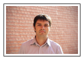
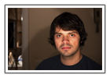
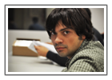
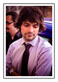

Alex Bikfalvi
- Home
- Bio
Vita
I am a post-doctoral researcher and engineer in telecommunications at the Network Technologies and Strategies research group from Pompeu Fabra University in Barcelona, Catalonia, Spain. I received a Doctor of Philosophy degree and Master of Science degree, both in telematic engineering, from the Carlos III University (UC3M) from Leganés, Madrid, Spain, in 2008 and 2012, respectively, and under the supervision of professor Jaime García-Reinoso. Before beginning my career in research, I received an engineering degree in electrical engineering (telecommunications) from the Faculty of Electronics, Telecommunications and Information Technology at the Technical University (UTCN) of Cluj-Napoca, Romania in 2006.
My current research work focuses on peer-to-peer video streaming, both live and on-demand, but I am interesting in any challenging topic in the field of computer networks. I worked also on next generation networks and the IP Multimedia Subsystem, distributed resource discovery, quality of service and network measurements. I like software development and I have experience with many programming languages.
Previously, I was a research assistant at the Madrid Institute for Advanced Studies in Networks and a doctoral student at the Telematics Engineering Department from the Carlos III University. There, I participated on several research projects including the CONTENT Network of Excellence, funded by the European Union under the VIth Framework Program, and BioGridNet, funded by regional government of the Autonomous Community of Madrid.
Before joining the UC3M and the Institute IMDEA Networks, I worked as a software engineer for the professional services division of Alcatel-Lucent in Romania and Australia. My experience there includes large billing systems, software integration and testing (performance, functional and regression). I am familiar with tools like IBM Netcool for network management, Business Objects for business intelligence, HP LoadRunner, QuickTest Professional and Quality Center for testing.
Photos
|  |  |  |  |
| High-res (JPG/4.61 MB) Low-res (JPG/452 KB) |
High-res (JPG/6.45 MB) Low-res (JPG/426 KB) |
High-res (JPG/2.45 MB) Low-res (JPG/479 KB) |
High-res (JPG/3.43 MB) Low-res (JPG/571 KB) |
About Me
Professional Info
Download my full resume (PDF/178.4 KB) | Check my research | View my publications | View my projects
Companies I've Worked For
Institute IMDEA Networks | Alcatel-Lucent
Schools I've Attended
Carlos III University of Madrid | Polytechnic University of Catalonia | Technical University of Cluj-Napoca | "Traian Lalescu" Computer Science High-School | School No. 8 Hunedoara
Where I grew up
Hunedoara, Transylvania, Romania
Places Where I've Lived
Madrid | Sydney | Timișoara | San Francisco | Barcelona | Cluj-Napoca | Hunedoara
Things I Like
Photography | Cycling | Live music | Coding | Hiking
Things I Do
Play tamborim, agogô and repinique in the batucada ensemble Sambanés. | Check us out in Morocco
Compete in duathlons and training for triathlons. | Bico, Madrid | Ecodumad, San Agustín de Guadalix | 1st Duathlon Muntanya dels Pèlags, Vilobí del Penedès
Key Milestones
| 2012 | Started as a postdoctoral researcher at Pompeu Fabra University |
| 2012 | Obtained the Doctor of Phylosophy degree from the Carlos III University of Madrid |
| 2008 | Obtained the Master of Science degree from the Carlos III University of Madrid |
| 2007 | Started as a research assitant at IMDEA Networks research institute and enrolled in the PhD program from the Carlos III University of Madrid |
| 2006 | Started as a Software engineer at Alcatel-Lucent |
| 2006 | Graduated with an Engineering title in telecommunications the Faculty of Electronics, Telecommunications and Information Technology from the Technical University of Cluj-Napoca |
| 2006 | Erasmus scholarship to finish my bachelor thesis at the Polytechnic University of Catalonia in Barcelona |
| 2005 | Obtained a research scholarship for 1 year from Siemens PSE to study network management |
| 2001 | Admitted to the Faculty of Electronics, Telecommunications and Information Technology at the Technical University of Cluj-Napoca |
| 2001 | Graduated the National High-School of Computer Science "Traian Lalescu" in Hunedoara |
| 1997 | Admitted to the National High-School of Computer Science "Traian Lalescu" in Hunedoara |
| 1989 | Started school |
Last updated: October 4, 2013